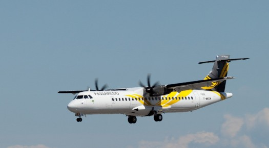

Atr da Passaredo faz pouso de emergência
Publicada em 15/08/2024

Um avião da Voepass (ATR 72-600), com 38 passageiros, fez um pouso de emergêcia em Uberlândia, Minas Gerais, após problemas técnicos, nesta quinta-feira (15). A aeronave saiu de Rio Verde, em Goiás, e tinha como destino Guarulhos, em São Paulo.
A Voepass informou apenas “problema técnico”, quando questionada sobre o motivo do desvio da rota.
Segundo apuração da CNN, o problema foi um transiente (variação elétrica que logo volta ao normal). Por precaução, o piloto fez a parada.
Segundo a Voepass, os 38 passageiros foram reacomodados para seguir o destino. O Aeroporto de Uberlândia informou à CNN que acionou o Plano de Emergência para o ocorrido, às 19h14 desta quinta.